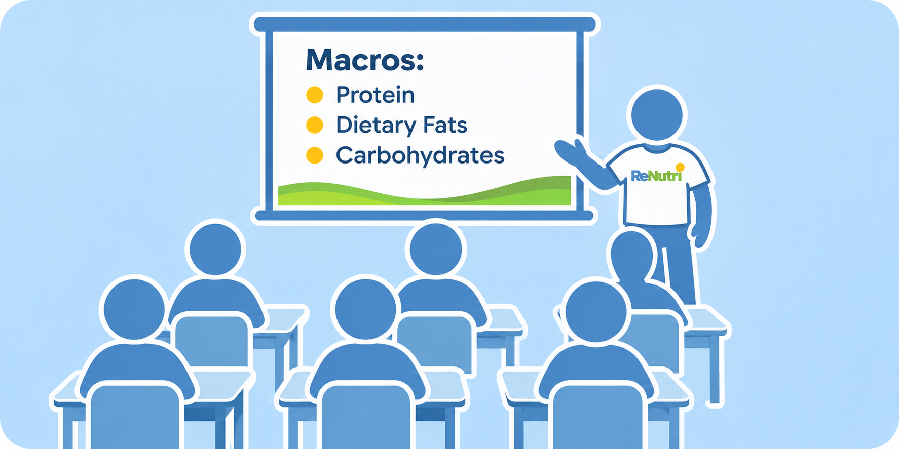
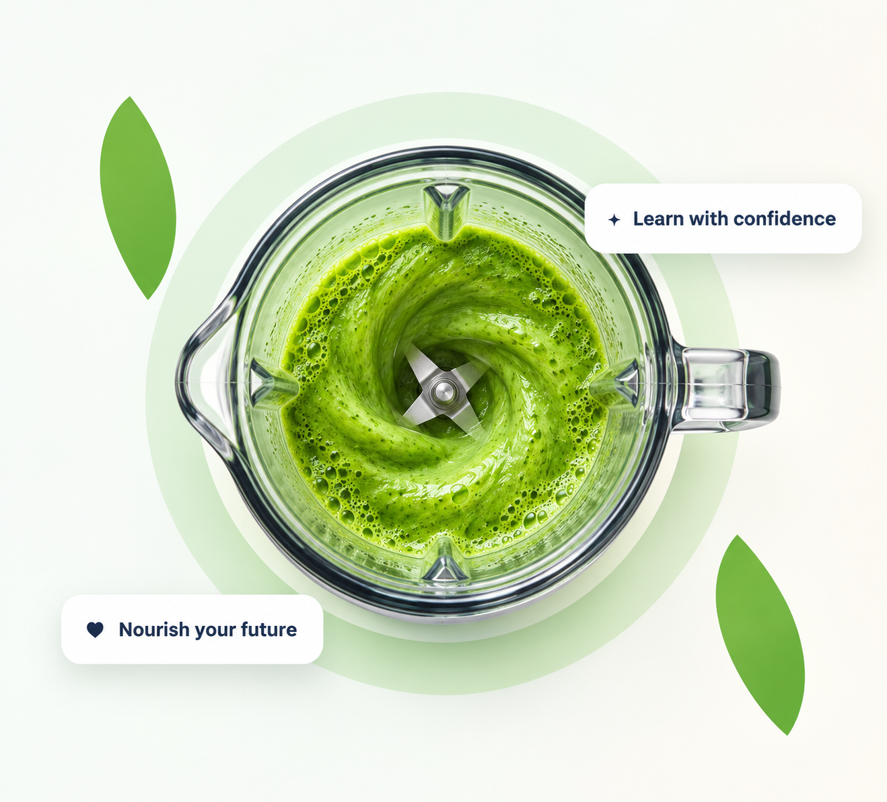
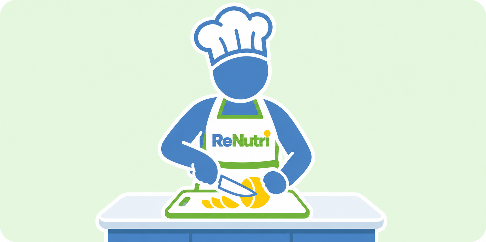
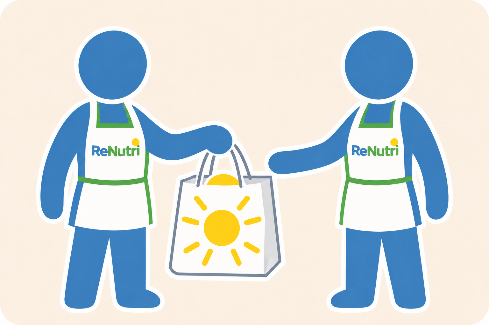
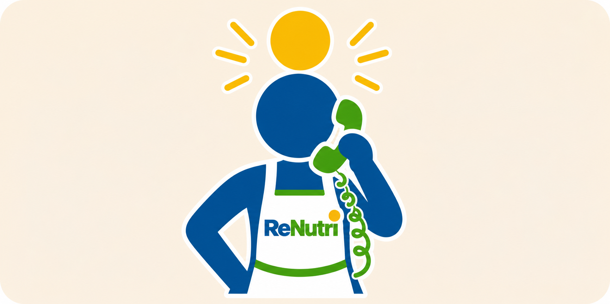

Nutrition Fundamentals
Explore nutrients and the role food plays in everyday wellbeing with an interactive approach.
Teach Me →Discover practical nutrition education, everyday cooking skills, and accessible resources to help build a healthier foundation for recovery.

ReNutri stands for Recovery with Nutrition—emphasizing the importance of daily food habits and informed choices to improve self-esteem, build self-confidence, and facilitate personal growth and empowerment.
We believe in the significance of real food to improve the lives of those who struggle with addiction and mental health challenges.
Explore our servicesEducational programs designed for all levels. We simplify the link between proper diet and positive mental health outcomes. Examples of what we teach
We understand our audience because we were once in the crowd. Certified peer support specialists with university credentials in the field of nutrition at your service.
Learn MoreRoutine development for foundational life skills.

Explore nutrients and the role food plays in everyday wellbeing with an interactive approach.
Teach Me →
Learn food preparation techniques and food safety from facilitators with real culinary experience.
Show Me →
Learn how to plan meals, shop on a budget, and utilize local resources.
Inform Me →Our programs and services are adaptable to every individual, group, or organization.

One on one private consultations services for nutrition and recovery.
Learn More
Evidence-based nutrition programming for organizations, community groups, and recovery programs.
Learn More
Media inquiries, publications, partnerships, and other requests.
Learn MoreNew downloadable guides and activities are planned for this space.
From simple snacks to satisfying meals, ReNutri is creating illustrated recipes and step-by-step cooking guides designed to make learning easier.
Ask about recipesWe would really like to hear from you.
This form sends your message through Netlify Forms when the website is deployed on Netlify. Please don't include sensitive health information.